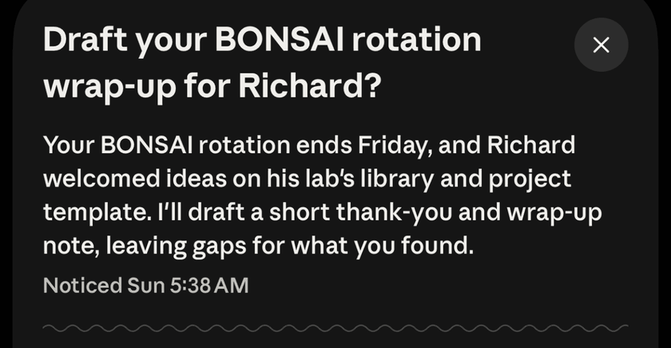

Each one built for a different place your work lives
AJ BareaLDQISRochester Institute of TechnologyNovember 6, 2026
Follow alongajbarea.github.io/talks/
What I did: changes sent to Richard Lange's lab code with Claude Code, and Duet on my phone since October 27.
Why you should care: an app can only help with work it can reach. Duet can't see your lab's files.
Reviewer 2 says our sample is too small. What should the response say?
Three points: what the power analysis shows, one added test, and a sentence on the limit.
IllustrativeSince July 2023, when claude.ai opened as a public beta.
Claude
ChatCoworkCode
Since October 2024 on Mac and Windows; Linux now in beta.
$ cd my-project $ claude
nn-library, one comparison step, memory
down to
Research preview since February 2025; generally available since May 2025.
Your datastays on your computer or server
↓
Code it writes and runsin a sandbox you approve
↓
Figure, with its code and historyso you can reproduce it
Reviewer checks claims against what ran
Beta since June 30, 2026.

Draft your BONSAI rotation wrap-up for Richard?Your BONSAI rotation ends Friday, and Richard welcomed ideas on his lab's library and project template. I'll draft a short thank-you and wrap-up note, leaving gaps for what you found.
A real card from my Duet, November 1, 2026.Research preview since October 21, 2026, by waitlist for US Pro, Max and Ultra plans.
| When the work is | It lives in | Use |
|---|---|---|
| A question, a draft, a paragraph to fix | a conversation | Claude chat |
| Files and apps on your laptop | your computer | Claude Desktop |
| A repository: scripts, tests, a pipeline | your code | Claude Code |
| An analysis you'll need to reproduce | your research | Claude Science |
| Email, calendar, follow-ups | your accounts | Claude Duet |
My experience, not a benchmark
changes sent to Richard Lange's lab, each measured before and after, and checked by a second AI agent.
Moments in a session where a hook can run, from each tool's own docs:
Gold: the my own rules plugin uses.
Counted from each tool's hooks page, November 2 and 4, 2026.
› Add DEBUG=1 to the .env file.
● Bash ls -la; cat -A .env
✕ Blocked: .env holds secrets. Don't read or change it.
I didn't add DEBUG=1. The project has a hook that blocks me from reading or editing .env … I haven't tried to get around it.
✓ .env unchanged
target=$(jq -r '.tool_input | [.file_path, .path, .glob, .command] | join(" ")') || exit 2
if [[ "$target" == *".env"* ]]; then
echo "Blocked: .env holds secrets. Don't read or change it." >&2
exit 2
fiA real run with permission prompts off, November 2, 2026, trimmed; adapted from Anthropic's hooks guide.
claude, then /init writes a CLAUDE.md of your project's rules.env hook from the demo is a good first onemacOS, Linux (Windows: backup slides)curl -fsSL https://claude.ai/install.sh | bash
5 apps
for five places: a conversation, your computer, your code, your research, your accounts
changes
to Richard Lange's lab code with Claude Code, each measured and reviewed
moments
where Claude Code's hooks can run, more than any rival I checked
Still open
I'm glad to take questions.
AJ Barea
PhD student, Rochester Institute of Technology
These slidesajbarea.github.io/talks/
claude-tooling
Never touch the raw data? Validate before every analysis? Keep private data out?
Claude Code on Windows PowerShellirm https://claude.ai/install.ps1 | iex
Claude Code needs Pro or above, Team, Enterprise or an API account; a PI can apply for Anthropic's Team plan for scientists. What it reads goes to Anthropic. Team, Enterprise and API: no training on it, kept 30 days by default. Pro, Max and Ultra: training follows your privacy setting.
{
"hooks": {
"PreToolUse": [{
"matcher": "Read|Edit|Write|Grep|Bash|PowerShell",
"hooks": [{
"type": "command",
"command": "\"$CLAUDE_PROJECT_DIR\"/.claude/hooks/protect-env.sh"
}]
}]
}
}#!/bin/bash
target=$(jq -r '.tool_input | [.file_path, .path, .glob, .command] | join(" ")') || exit 2
if [[ "$target" == *".env"* ]]; then
echo "Blocked: .env holds secrets. Don't read or change it." >&2
exit 2
fiCommit both, and everyone's Claude Code follows the rule. Needs jq, and Git for Windows on Windows. For a hard block, also add .env deny rules and the sandbox.
| Does on its own | Checks accounts, builds dashboards, writes forecasts and briefs, helps with meetings, prototypes web apps |
|---|---|
| Never allowed | Trading securities or moving money between accounts, even with your yes |
| Connectors | Over 6,000 connectors and plugins, shared with the rest of Claude |
| Where | iOS and Android apps, and claude.ai |
| Your files | "Can't see all of your projects or the files on your computer" (help center) |
| Model | Claude Opus 5.5 only; it picks the effort per job |
| Who can join | Waitlist; US Pro, Max and Ultra; not Team or Enterprise yet |
| Cost | No extra charge in the preview; background checks use your plan's limits |
| Passwords | Never sees them; sign-in tokens are added by a proxy outside its computer |
| Memory | Kept until you reset it, even after you disconnect an app |
| Known gaps | Can't show its browser yet; no calls or texts; Microsoft 365 not available yet; urgent mail can land between checks |
| An early review | Every: Duet can see the reviewer's Claude sessions but can't direct them |
| Rivals named in the press | Meta's Muse, OpenAI's dots, Grok Bot |
| What lab code needs | Claude chat | Claude Desktop | Claude Code | Claude Science | Claude Duet |
|---|---|---|---|---|---|
| Reads and changes your repository | ~sees what you upload or connect | ~its Code tab is Claude Code | ✓works in it | ~reads, runs and edits your scripts | ✕can't see your computer's files |
| Runs on your own computer or cluster | ✕Anthropic's cloud | ✓your computer, folders you choose | ✓your terminal | ✓laptop, lab server or cluster | ✕its own cloud computer |
| Follows your lab's own rules | ~skills you add | ~skills and plugins you add | ✓hooks it can't skip | ~skills you save | ~Anthropic's list |
| Comes to you unasked | ✕waits for you | ~scheduled Cowork tasks | ~on a schedule you set | ✕you start each analysis | ✓checks every few hours |
Apps in launch order. Claude Desktop also holds the chat and Cowork. Claude Science saves a pipeline as a skill it reuses.
Cowork runs in Claude Desktop and is moving into the chat, plan by plan; Claude Design now works inside any Claude chat.
$ cd my-project
$ claudeclaude -p in scripts and scheduled jobsMCP: Model Context Protocol, an open standard for connecting AI tools to data.